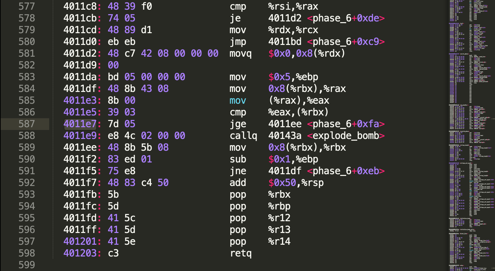
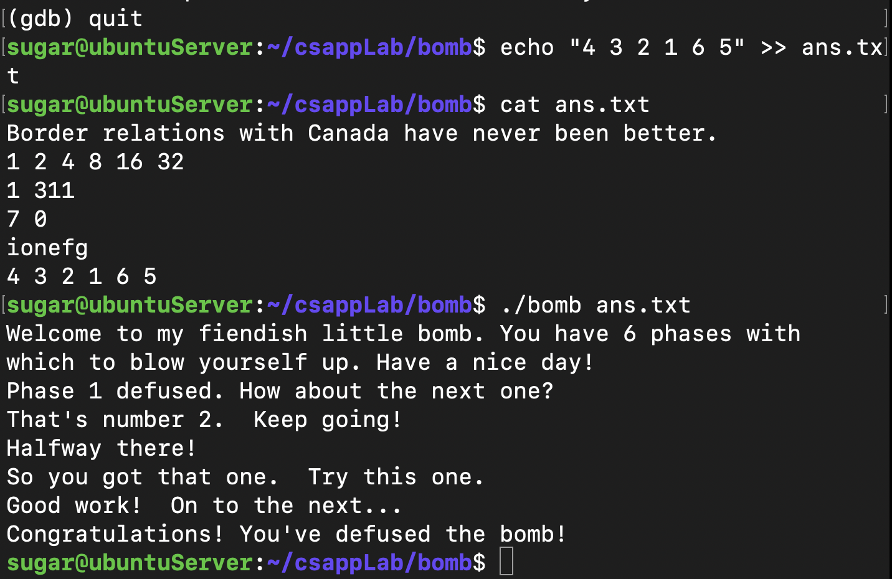

CSAPP - Bomb Lab
从可执行文件出发，利用gdb、objdump等工具检查出正确的炸弹拆解密码串。
objdump命令是用查看目标文件（app.o）或者可执行的目标文件（app）的构成的gcc工具。
首先使用 $objdump -d bomb >> bomb.a 命令disassemble可执行文件，重定向输出到bomb.a文件。接着就可以用gdb来调试bomb，同时关注bomb.a的汇编代码。
找到程序入口main。对比汇编代码，进行gdb调试。在bomb.c文件中可以看大体的程序结构。main函数中，都是先读取一行输入，输入的字符串地址保存$rdi中，可以在gdb中使用 (gdb) print (char *)($rdi) 查看。之后调用phase_x函数，phase_x中会对输入进行判断，如果不满足条件，则触发炸弹。
phase_1
根据汇编代码，可以看到，strings_not_equal还需要一个参数：esi，可以用gdb查看内存0x402400所在位置的字符串是什么。
0000000000400ee0 <phase_1>:
400ee0: 48 83 ec 08 sub $0x8,%rsp
400ee4: be 00 24 40 00 mov $0x402400,%esi
400ee9: e8 4a 04 00 00 callq 401338 <strings_not_equal>
400eee: 85 c0 test %eax,%eax
400ef0: 74 05 je 400ef7 <phase_1+0x17>
400ef2: e8 43 05 00 00 callq 40143a <explode_bomb>
400ef7: 48 83 c4 08 add $0x8,%rsp
400efb: c3 retq
gdb的一般使用就是先设置断点，再启动程序，进行调试。
sugar@ubuntuServer:~/csappLab/bomb$ gdb bomb
GNU gdb (Ubuntu 8.1.1-0ubuntu1) 8.1.1
......
(gdb) break phase_1
Breakpoint 1 at 0x400ee0
(gdb) run ans.txt
Starting program: /home/sugar/csappLab/bomb/bomb ans.txt
Welcome to my fiendish little bomb. You have 6 phases with
which to blow yourself up. Have a nice day!
Breakpoint 1, 0x0000000000400ee0 in phase_1 ()
(gdb) print (char *)0x402400
$1 = 0x402400 "Border relations with Canada have never been better."
所以可以把字符串"Border...."写入ans.txt文件，作为运行bomb的输入，检测是否是可以拆解炸弹的短语。
phase_2
这个短语的猜测需要了解 sscanf(src, pattern, args...) 函数调用时候的参数设置，在CSAPP第三章3.7.4节有关栈上的局部存储有详细的解释，也同样需要gdb调试，可以来查看pattern的形式，以及调用了sscanf后栈上的参数存储顺序。
(gdb) run ans.txt
Starting program: /home/sugar/csappLab/bomb/bomb ans.txt
Welcome to my fiendish little bomb. You have 6 phases with
which to blow yourself up. Have a nice day!
Phase 1 defused. How about the next one?
1 2 3 4 5 6 7
Breakpoint 1, 0x0000000000400efc in phase_2 ()
(gdb) print $rdi
$1 = 6305744
(gdb) print (int *)($rdi)
$2 = (int *) 0x6037d0
(gdb) print (char *)($rdi)
$3 = 0x6037d0 "1 2 3 4 5 6 7"
(gdb) break read_six_numbers
Breakpoint 2 at 0x40145c
(gdb) continue
Continuing.
Breakpoint 2, 0x000000000040145c in read_six_numbers ()
(gdb) print $rsp
$4 = (void *) 0x7fffffffe318
(gdb) break *0x400f0a
Breakpoint 3 at 0x400f0a
(gdb) continue
Continuing.
Breakpoint 3, 0x0000000000400f0a in phase_2 ()
(gdb) print $eax
$5 = 6
(gdb) print (int *)($rsp)
$6 = (int *) 0x7fffffffe320
(gdb) print *(int *)($rsp)
$7 = 1
(gdb) print *(int *)($rsp+4)
$8 = 2
(gdb) print *(int *)($rsp+5)
$9 = 50331648
(gdb) print *(int *)($rsp+8)
$10 = 3
(gdb) print *(int *)($rsp+12)
$11 = 4
(gdb) print *(int *)($rsp+16)
$12 = 5
(gdb) print *(int *)($rsp+20)
$13 = 6
(gdb) print *(int *)($rsp+24)
$14 = 4199473
(gdb) print *(int *)(0x4025c3)
$15 = 622879781
(gdb) print *(char *)(0x4025c3)
$16 = 37 '%'
(gdb) print (char *)(0x4025c3)
$17 = 0x4025c3 "%d %d %d %d %d %d"
最后通过汇编代码确定输入整数的大小关系。即需要输入六个整数，第一个数为1，之后依次扩大两倍。
phase_3
一个类似switch结构的汇编代码，调试方法和前两个类似。
0000000000400f43 <phase_3>:
400f43: 48 83 ec 18 sub $0x18,%rsp
400f47: 48 8d 4c 24 0c lea 0xc(%rsp),%rcx
400f4c: 48 8d 54 24 08 lea 0x8(%rsp),%rdx
400f51: be cf 25 40 00 mov $0x4025cf,%esi
400f56: b8 00 00 00 00 mov $0x0,%eax
400f5b: e8 90 fc ff ff callq 400bf0 <__isoc99_sscanf@plt>
400f60: 83 f8 01 cmp $0x1,%eax # 至少输入两个数字
400f63: 7f 05 jg 400f6a <phase_3+0x27>
400f65: e8 d0 04 00 00 callq 40143a <explode_bomb>
400f6a: 83 7c 24 08 07 cmpl $0x7,0x8(%rsp) # 第一个数字和7比
400f6f: 77 3c ja 400fad <phase_3+0x6a> # 大于就爆炸
400f71: 8b 44 24 08 mov 0x8(%rsp),%eax
400f75: ff 24 c5 70 24 40 00 jmpq *0x402470(,%rax,8) # 偏移量在地址0x402470的位置
400f7c: b8 cf 00 00 00 mov $0xcf,%eax # eax = 207
400f81: eb 3b jmp 400fbe <phase_3+0x7b>
400f83: b8 c3 02 00 00 mov $0x2c3,%eax # eax = 707
400f88: eb 34 jmp 400fbe <phase_3+0x7b>
400f8a: b8 00 01 00 00 mov $0x100,%eax # eax = 256
400f8f: eb 2d jmp 400fbe <phase_3+0x7b>
400f91: b8 85 01 00 00 mov $0x185,%eax
400f96: eb 26 jmp 400fbe <phase_3+0x7b>
400f98: b8 ce 00 00 00 mov $0xce,%eax
400f9d: eb 1f jmp 400fbe <phase_3+0x7b>
400f9f: b8 aa 02 00 00 mov $0x2aa,%eax
400fa4: eb 18 jmp 400fbe <phase_3+0x7b>
400fa6: b8 47 01 00 00 mov $0x147,%eax
400fab: eb 11 jmp 400fbe <phase_3+0x7b>
400fad: e8 88 04 00 00 callq 40143a <explode_bomb>
400fb2: b8 00 00 00 00 mov $0x0,%eax
400fb7: eb 05 jmp 400fbe <phase_3+0x7b>
400fb9: b8 37 01 00 00 mov $0x137,%eax
400fbe: 3b 44 24 0c cmp 0xc(%rsp),%eax # 第二个数字和eax比较，不相等就爆炸
400fc2: 74 05 je 400fc9 <phase_3+0x86>
400fc4: e8 71 04 00 00 callq 40143a <explode_bomb>
400fc9: 48 83 c4 18 add $0x18,%rsp
400fcd: c3 retq
最终可以得到多个可能的解如：
0 ->207
1 ->311
2 ->707
3 ->256
...
有七组数据可以对应
phase_4
这个可以写出汇编对应的c代码，来确定输入的串（两个整数）的要求，我用了瞪眼法来确定了一个解：7 0.
主要是func4太糙蛋，前面几条汇编都是来迷惑人的。。。
phase_5
比较有意思，通过阅读汇编和使用gdb确定有关的字符串，以及一些简单的运算，得到答案：要求输入一个长度为6的字符串，对每个字符取低4位bit，作为偏移量的值。在串"maduiersnfotvbylSo you think you can stop the bomb with ctrl-c, do you?"中找到能组成串"flyers"的字符下标，总共有6个下标（偏移量），保证所以输入的字符的低四位是需要的偏移量。解决方法可见下面我的gdb调试过程。
(gdb) break phase_5
Breakpoint 1 at 0x401062
(gdb) run ans.txt
Starting program: /home/sugar/csappLab/bomb/bomb ans.txt
Welcome to my fiendish little bomb. You have 6 phases with
which to blow yourself up. Have a nice day!
Phase 1 defused. How about the next one?
That's number 2. Keep going!
Halfway there!
So you got that one. Try this one.
abcdef
Breakpoint 1, 0x0000000000401062 in phase_5 ()
(gdb) print (char *)0x4024b0
$1 = 0x4024b0 "maduiersnfotvbylSo you think you can stop the bomb with ctrl-c, do you?"
(gdb) print *(char *)(0x4024b0 + 3)
$2 = 117 'u'
(gdb) print (char *)0x40245e
$3 = 0x40245e "flyers"
(gdb) print *(char *)(0x4024b0 + 10)
$4 = 111 'o'
(gdb) print *(char *)(0x4024b0 + 9)
$5 = 102 'f'
(gdb) print *(char *)(0x4024b0 + 15)
$6 = 108 'l'
(gdb) print *(char *)(0x4024b0 + 14)
$7 = 121 'y'
(gdb) print *(char *)(0x4024b0 + 5)
$8 = 101 'e'
(gdb) print *(char *)(0x4024b0 + 6)
$9 = 114 'r'
(gdb) print *(char *)(0x4024b0 + 7)
$10 = 115 's'
(gdb) print /x 'c'
$11 = 0x63
(gdb) print /x 'a'
$12 = 0x61
(gdb) print /x 'a'-1
$13 = 0x60
(gdb) print /x 'a'+6
$14 = 0x67
(gdb) print /c 'a'+6
$15 = 103 'g'
(gdb) print /c 0x69
$16 = 105 'i'
(gdb) print /c 0x6f
$17 = 111 'o'
(gdb) print /c 0x6e
$18 = 110 'n'
(gdb) print /c 0x65
$19 = 101 'e'
(gdb) print /c 0x66
$20 = 102 'f'
(gdb) print /c 0x67
$21 = 103 'g'
(gdb)
最终确定输入字符串是“ionefg”，也同样有多个解。
phase_6
这题很难，我自己顺序阅读汇编，只能弄懂输入的要求是6个整数，且都要小于7，并且保存在栈上的值是x = 7 - x，之后读不懂了。。参考了这篇博文，转变思路，逆向推导，在最后一个bomb_exploded的地方（0x4011e7)设置断点，同时程序输入1 2 3 4 5 6作为测试输入，看看最终的比较是在比较什么。发现phase_6最后的代码一直在进行一个6次的循环，每次要从rbx中取一些内容，同时变换rbx。0x4011e7的jge表示了这段内容的值要满足降序排列，否则炸弹爆炸。

应用gdb的x/3x，查看一段内存，发现这边有一个结构体node，根据node的值的特点，可以判断结构体的成员，如果按C定义的话是这样的：
struct node{
int val;
int index;
struct node *next;
}
(gdb) x/3x $rbx
0x603320 <node6>: 0x000001bb 0x00000006 0x00603310
(gdb) x/2x $rbx
0x603320 <node6>: 0x000001bb 0x00000006
(gdb) x/2x *($rbx+8)
0x603310 <node5>: 0x000001dd 0x00000005
(gdb) x/4x *($rbx+8)
0x603310 <node5>: 0x000001dd 0x00000005 0x00603300 0x00000000
(gdb) x/3x *($rbx+8)
0x603310 <node5>: 0x000001dd 0x00000005 0x00603300
(gdb) x/3x *(*($rbx+8)+8)
0x603300 <node4>: 0x000002b3 0x00000004 0x006032f0
(gdb) x/3x *(*(*($rbx+8)+8)+8)
0x6032f0 <node3>: 0x0000039c 0x00000003 0x006032e0
(gdb) x/3x *(*(*(*($rbx+8)+8)+8)+8)
0x6032e0 <node2>: 0x000000a8 0x00000002 0x006032d0
(gdb) x/3x *(*(*(*(*($rbx+8)+8)+8)+8)+8)
0x6032d0 <node1>: 0x0000014c 0x00000001 0x00000000
(gdb) x/3x *(*(*(*(*(*($rbx+8)+8)+8)+8)+8)+8)
0x0: Cannot access memory at address 0x0
再看看每个节点的值（也就是node的第一个成员）分别是（从node6 -> node1）：
(gdb) print /d 0x1bb
$63 = 443
(gdb) print /d 0x1dd
$62 = 477
(gdb) print /d 0x2b3
$64 = 691
(gdb) print /d 0x39c
$65 = 924
(gdb) print /d 0xa8
$66 = 168
(gdb) print /d 0x14c
$67 = 332
(gdb) print *0x6032d0
$68 = 332
所以并不满足降序的排列，会导致炸弹的爆炸。于是我更换下输入的六个数字，看看是如何对应节点变化的。
当不同的输入六个数字后，node节点出现的位置不同。
(gdb) run ans.txt
Starting program: /home/sugar/csappLab/bomb/bomb ans.txt
Welcome to my fiendish little bomb. You have 6 phases with
which to blow yourself up. Have a nice day!
Phase 1 defused. How about the next one?
That's number 2. Keep going!
Halfway there!
So you got that one. Try this one.
Good work! On to the next...
3 2 4 5 6 1
Breakpoint 4, 0x00000000004011e7 in phase_6 ()
(gdb) x/3x $rbx
0x603300 <node4>: 0x000002b3 0x00000004 0x00603310
(gdb) x/3x *($rbx+8)
0x603310 <node5>: 0x000001dd 0x00000005 0x006032f0
(gdb) x/3x *(*($rbx+8)+8)
0x6032f0 <node3>: 0x0000039c 0x00000003 0x006032e0
(gdb) x/3x *(*(*($rbx+8)+8)+8)
0x6032e0 <node2>: 0x000000a8 0x00000002 0x006032d0
(gdb) x/3x *(*(*(*($rbx+8)+8)+8)+8)
0x6032d0 <node1>: 0x0000014c 0x00000001 0x00603320
(gdb) x/3x *(*(*(*(*($rbx+8)+8)+8)+8)+8)
0x603320 <node6>: 0x000001bb 0x00000006 0x00000000
(gdb)
但要保证前一个节点的value大于第二个节点
node6: 442
node5: 477
node4: 691
node3: 924
node2: 168
node1: 332
正确顺序是 3 4 5 6 1 2
但汇编代码中有 x = 7 - x的输入变化
所以答案是 4 3 2 1 6 5
最终拆解了炸弹：
